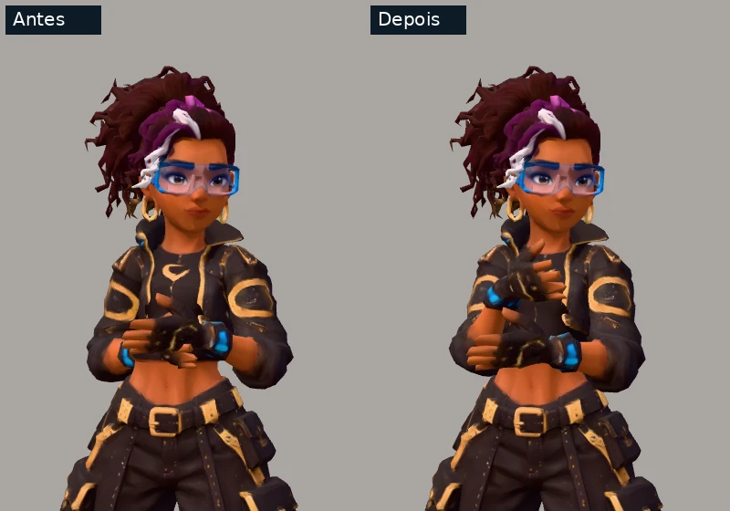
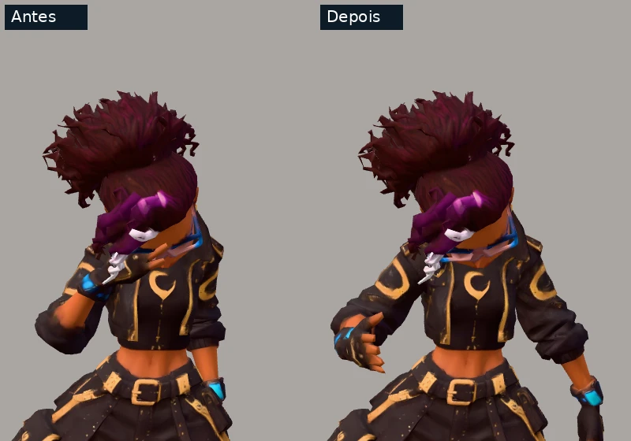
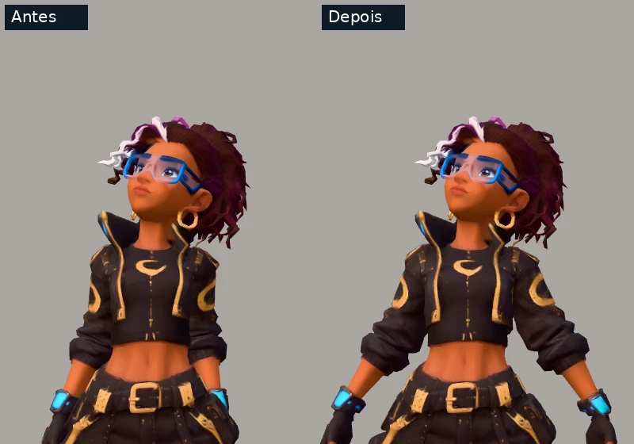
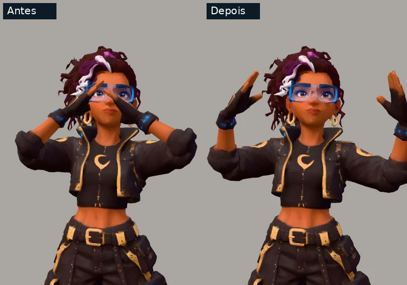
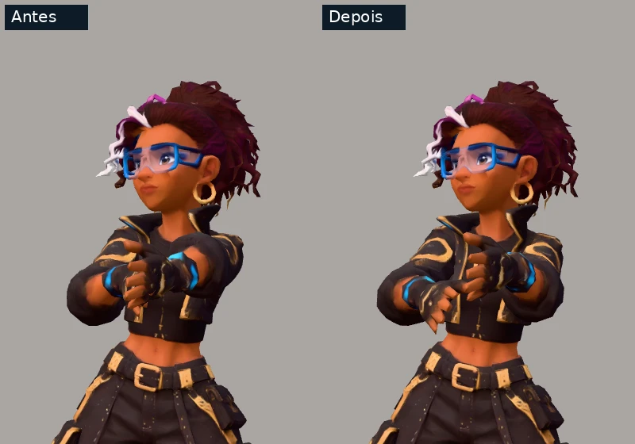

Nana: mãos nas cinco animações
Comparação da posição das mãos, da folga junto ao corpo e da passagem ao lado do rosto. Mesma malha, textura, pesos e câmera. Pernas, quadril, tronco e cabeça conservam suas trilhas.
Abrir a Nana no Ateliê · Implementação e limites
Antes e depois estão no mesmo vídeo, sincronizados quadro a quadro. Use os controles para reproduzir, pausar e comparar qualquer instante. Os detalhes abaixo ampliam poses reais do mesmo movimento.
Lobby
Antes · 8c44e5bDepois · mãos e punhos
6 segundos · 144 quadros por versão.Ampliar o contato em 1.07 s

Derrota
Antes · 8c44e5bDepois · mãos e punhos
4.5 segundos · 108 quadros por versão.Ampliar o contato em 2.97 s

Vitória
Antes · 8c44e5bDepois · mãos e punhos
6 segundos · 144 quadros por versão.Ampliar o contato em 5.07 s

Macarena
Antes · 8c44e5bDepois · mãos e punhos
4 segundos · 96 quadros por versão.Ampliar o contato em 3.00 s

Dança retrô
Antes · 8c44e5bDepois · mãos e punhos
5 segundos · 120 quadros por versão.Ampliar o contato em 4.83 s
